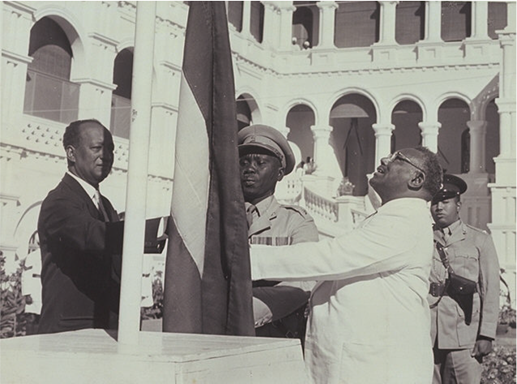

About Sudan
History
The name Sudan refers to the region south of the great African desert extending from the Atlantic Ocean in the west to the Red Sea and the Indian Ocean in the east. However, it is now used to refer to the area south of Egypt, specifically the middle part of the Nile Basin.
The Republic of Sudan is an Arab-African country that represents a unique social fabric with diverse cultures, ethnicities, and features rarely found elsewhere in the world.
Independence
The Graduates' Congress was formed in 1938 as a social and cultural platform for graduates of higher schools in Sudan. However, it quickly called for the elimination of colonialism in Sudan and the right of Sudanese people to self-determination. The efforts continued until the Sudanese parliament convened on December 19, 1955, and declared Sudan's independence, requesting the Anglo-Egyptian condominium to recognize Sudan as an independent state. Independence was achieved, and the Sudanese flag was raised on January 1, 1956.
Ismail al-Azhari and Muhammad Ahmed Mahjoub raising the independence flag in January 1956.
Population
The population of Sudan was estimated at approximately 33,419,625 at the beginning of 2011. The people of Sudan comprise tribes of Arab, African, and Nubian origins.
Climate
Sudan has a tropical climate characterized by high temperatures throughout most of the year, ranging from very dry in the north to semi-humid in the south. The climate is desert and semi-desert in the north (Northern State, North Kordofan, and North Darfur), and rainy in the central and southern regions. Most of the land is flat plains with elevations in the east, the Nubian Mountains, and Jebel Marra in the west. The annual rainfall ranges from nearly zero in the far north to 500-1000 mm in South Sudan. The Nile River and its tributaries play a vital role in Sudan's economic, social, and cultural life. The Nile waters are used to generate electricity, for navigation, and for fishing. The underground water reserves are estimated at about 900 billion cubic meters of water suitable for irrigation and civil uses.
Religion
Islam, Christianity, and local beliefs.
Language
Arabic, local languages, and dialects.
Government System
Sudan has a decentralized system of governance with three levels: National Level, State Level, and Local Level. There are 18 states in Sudan.
Capital
The capital of Sudan is Khartoum, known as the tri-capital, comprising three cities: Khartoum (political capital), Omdurman (national capital), and Khartoum Bahri (industrial capital).
Main Industries
Textiles, cement, cooking oil, sugar, soap, leather products, food products, mining, and manufacturing industries.
Livestock
Sudan's livestock (estimated in 2011) includes 103,278,000 heads, including 28,618,000 cattle, 39,296,000 sheep, 30,649,000 goats, and 4,715,000 camels, distributed across the country's regions.
Forestry Products
Sudan's forests include acacia and talh trees, with approximately 40,120 acres of acacia producing about 15.2 million tons annually and 64,210 acres of talh producing about 3.45 million tons annually. Timber production includes 11,250 cubic meters of saw timber and 141,450 cubic meters of firewood annually. Charcoal production averages around 1,772,541 bags annually.
Minerals and Petroleum
Annual mineral production (as of 2005) includes gold (4.73 tons), chromium (14,666 tons), gypsum (5,132 tons), salt (48,685 tons), silver (2.40 tons), and crude oil (113,094 barrels in 2004).
Exports
Sudan is rich in resources, with oil, livestock, gum arabic, cotton, oilseeds, and gold being major contributors to the state's treasury.
Airports, Airstrips, and Ports
Sudan has 17 airports, including 6 international airports, the largest of which is Khartoum International Airport, with plans to relocate and reconstruct it. The country also has 63 airstrips across its different regions. The Red Sea is Sudan's maritime gateway to the outside world, with ports including Port Sudan, Suakin, Oseif, and Bashayer, featuring coral reefs that host various rare marine life forms.